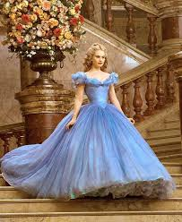
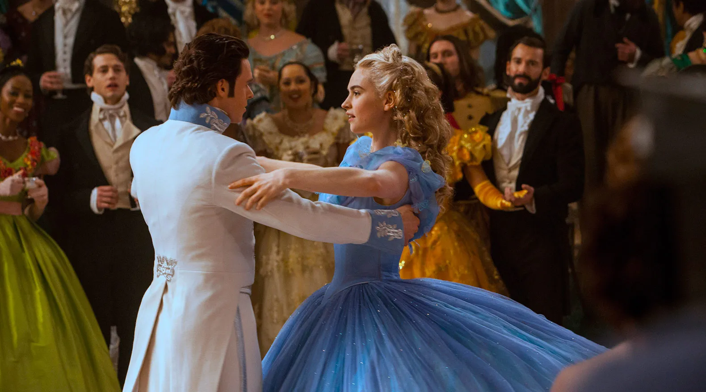

CINDERELLA (2015)
Cinderella is a 2015 live-action adaptation of the classic Disney animated film, directed by Kenneth Branagh. The movie retells the timeless fairy tale with stunning visuals, elegant costumes, and emotional performances. Starring Lily James in the title role and Cate Blanchett as the wicked stepmother, this version brings the magic of Cinderella to life with modern cinematic flair.
A beautifully crafted fairy tale that blends fantasy, romance, and elegance. A must-watch for fans of magical storytelling and visual splendor.
This version of Cinderella captures the charm and grace of the original story while adding depth to its characters. From the majestic ballroom scene to the iconic glass slipper moment, every frame is filled with breathtaking detail and emotion. The chemistry between Lily James and Richard Madden adds warmth and sincerity to the fairytale romance.
The film was praised for its production design, costume work by Oscar-winning designer Sandy Powell, and the warm tone set by director Kenneth Branagh. It's a perfect example of how traditional stories can be reimagined for a new generation without losing their timeless appeal.
 One of the most memorable aspects of the film is its attention to detail — from the grand palace to the humble attic where Ella lives, every setting feels real and immersive. The film also includes subtle feminist themes, making it more relevant than ever.
Whether you're revisiting the story or discovering it anew, this version of Cinderella will enchant viewers of all ages with its beauty, kindness, and enduring message about staying true to yourself.
Filming Locations
The movie was filmed across several beautiful locations in the UK and Europe:
Main Cast
Lily James
Ella / Cinderella
Cate Blanchett
Stepmother
Richard Madden
Kit
Helena Bonham Carter
Fairy Godmother
Stellan Skarsgård
Grand Duke
Holliday Grainger
Anastasia